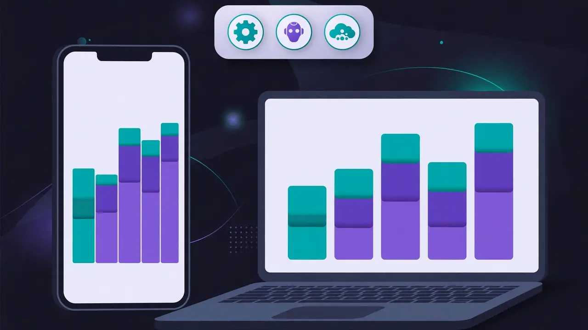
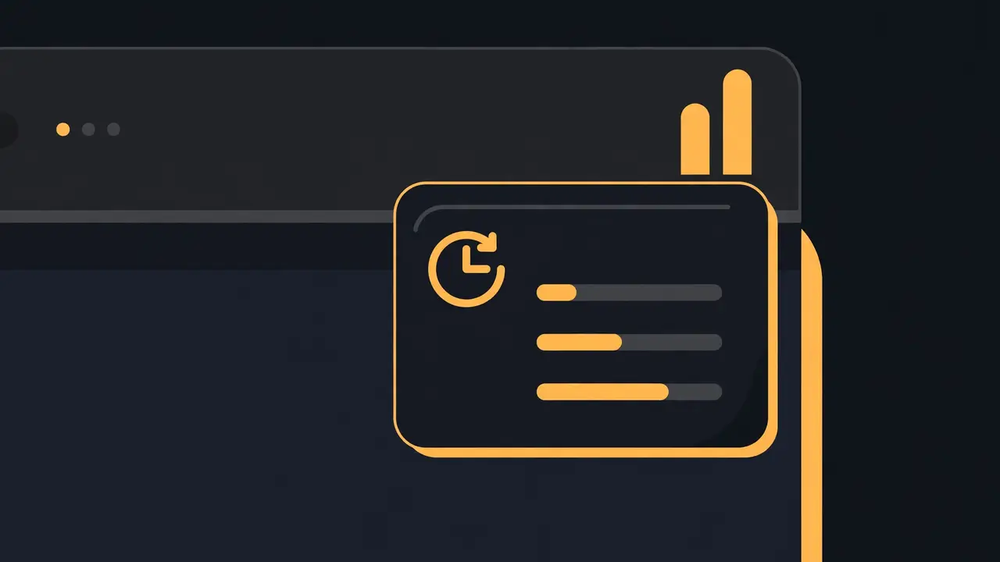

Every AI quota in one glance: a hands-on guide to TokenBar
Claude, Codex, Cursor, OpenRouter, DeepSeek — every AI service you pay for hides its quota on a different page, on a different reset clock. TokenBar puts all 50 of them in one tray icon and dashboard, so you see the limit coming before it stops your work.
- What: TokenBar — an open-source, cross-platform monitor for AI usage limits, balances and reset times, with a tray icon, dashboard, usage history and alerts.
- Project: lwh0630/TokenBar, MIT license, created 2026-10-24 — v1.0.0 released 2026-10-24, with 51 GitHub stars and 3 forks (verified 2026-10-25).
- Coverage: 50 services — 3 subscription logins (Codex, Claude, Cursor) plus 23 official API keys, 8 coding plans, 6 self-hosted gateways and 10 other account APIs.
- Platforms: Windows 10/11 (x64 and ARM64), macOS 12+ (Apple Silicon and Intel), Linux x64/ARM64 experimental, Android 7+; iOS 15+ experimental, sideload only.
- Install check: every release ships a
SHA256SUMS.txt; Android APKs are signed with a release key whose certificate SHA-256 digest isc04373ec39a24dd04d6f6797ed984be27d172c01fc30833f957845bb5b622d27. - Privacy: credentials live in the platform secure store and never appear in logs, snapshots, sync data or exported JSON; the app is read-only and never refreshes another tool's tokens except for an opt-in Claude refresh that is off by default.
Claude says you have five hours left. Codex counts a week. Cursor counts a month. OpenRouter counts credits, DeepSeek counts balance, and every one of them hides its number on a different page, behind a different login, on a different reset clock. Nobody hits a limit at a convenient moment — you hit it twenty minutes before a deadline, mid-task, when switching tools costs the most.
TokenBar puts all of those numbers in one place: a two-bar tray icon that follows your tightest quota, a dashboard for every account, and a history view that shows whether you are burning faster than a linear pace. It is lwh0630/TokenBar, MIT licensed, created 2026-10-24, with its v1.0.0 release published the same day and 51 GitHub stars at writing time. It is built with Flutter, runs on Windows, macOS, Linux, Android and (experimentally) iOS, and it is an independent project, not affiliated with or endorsed by any service it monitors.
What you'll need
- One supported device: Windows 10/11, macOS 12+, Linux (experimental) or Android 7+ — iOS only if you are comfortable sideloading
- The AI accounts you already use: a Codex, Claude or Cursor login on that machine, or API keys for the rest
- Nothing new to buy and no TokenBar account — the app itself is free and needs no login of its own
- Optional: Flutter 3.47.7 if you want the demo mode or a build from source, and Docker if you want phone sync
Every AI quota in one glance
1. Download the right build and check it
Open the Releases page for lwh0630/TokenBar and pick the file for your machine from the v1.0.0 assets: tokenbar-v1.0.0-windows-x64-setup.exe (or -arm64- on Windows on ARM), tokenbar-v1.0.0-macos-arm64.dmg for Apple Silicon or -x86_64.dmg for Intel, tokenbar-v1.0.0-linux-x64.tar.gz (or -arm64-), or the Android APK that matches your phone — arm64-v8a for almost every recent phone, armeabi-v7a for old 32-bit devices, x86_64 for emulators. Every release ships a SHA256SUMS.txt: check your download against it before you install, the way the project documents. Skip the iOS file for now — it is an unsigned IPA, and step 6 explains what that means.
2. Install it on your platform
On Windows, run the installer: it installs per-user by default, with no administrator rights, to %LOCALAPPDATA%\Programs\TokenBar, adds a Start menu entry, upgrades in place and uninstalls from Settings → Apps. The installer and app are not code-signed, so SmartScreen may show “Windows protected your PC” — choose More info → Run anyway. If your machine enforces Smart App Control or an application-control policy, it can block unsigned executables outright; then build from source instead. On macOS, open the disk image and drag TokenBar to Applications; it is ad-hoc signed and not notarized, so if macOS blocks the first launch, right-click the app and choose Open, or run xattr -dr com.apple.quarantine /Applications/TokenBar.app. On Linux, extract the tarball and run ./token_bar inside it; you need GTK 3, libsecret with a running keyring, and libayatana-appindicator3 — on Debian/Ubuntu, sudo apt install libgtk-3-0 libsecret-1-0 libayatana-appindicator3-1. On Android, open the APK and allow installation from your browser or file manager when asked; verify it with apksigner verify --print-certs and check the certificate SHA-256 digest against the one in the key facts above.
3. Try demo mode before your real accounts
Before handing the app anything real, see the whole interface with fake data. From a source checkout, flutter run --dart-define=TOKENBAR_DEMO=true starts with fictional accounts and a simulated month of history. Demo mode uses in-memory storage, makes no network requests and never touches your real settings or credentials — it is also what the project's screenshots were taken with, so what you see in demo is what the dashboard is supposed to look like. Add --dart-define=TOKENBAR_DEMO_LANG=en (or zh) to pin the UI language. If demo is not for you, skip it: the next step adds nothing until you say so.

4. Let it find your logins, then add the rest
Launch TokenBar. On desktop it detects the services you are already signed in to — Codex, Claude and Cursor — and adds them: Codex from ~/.codex/auth.json (run codex login first), Claude from its Claude Code login, Cursor from its desktop login. That read is read-only, and TokenBar never refreshes or rewrites another tool's tokens, because refreshing rotates the refresh token and can sign the official client out. Then open Accounts → Add account for everything else: pick a service from the searchable list, paste the key or cookie, save. Several accounts of the same service are fine — different CODEX_HOME directories, for example. On desktop, leaving a key field empty falls back to that provider's usual environment variable. Three ways in, in the project's own terms: local login (desktop only), API key or token (desktop, phone and web), and cookie copied from your browser's developer tools — with the warning that cookie endpoints are not public and may change without notice.
5. Read the tray, dashboard and history
The dashboard refreshes every few minutes (configurable). The tray icon is the part you will actually live with: two bars driven by your tightest window. Click it to open the tray panel, which lists each account's two tightest windows with reset countdowns, and closes when it loses focus; Open TokenBar brings back the main window. (On Linux the tray offers a menu only, no click panel — use the menu's Open TokenBar.) Tap an account for per-window detail and history: choose 24 hours, 7 days or 30 days, and each bar shows the usage added in that slot, stacked by quota window or by cost item. Cursor and Codex can also be viewed per model as a stacked chart of tokens (plus cost where known): Cursor reads its dashboard events feed, Codex reads the local session logs under ~/.codex/sessions — read-only, and only model names and token counts are taken from them, never prompt or file content. Set low-quota alerts at thresholds you choose, and an alert for when a low quota resets, so the next step is a decision, not a surprise.
6. Set alerts and put it on your phone
Alerts live in the app; sync is the optional extra, and only for one reason: seeing your PC's quotas on your phone or in a browser. The server is self-hosted and stores usage snapshots — never provider credentials. With Docker, docker compose up -d after setting TOKENBAR_TOKEN (and optionally TOKENBAR_READ_TOKEN) in .env; then on the PC go to Settings → Server sync → Push local data with the server URL and admin token, and on the phone use View server data with the read-only token. A machine without a desktop UI can run tokenbar collect --server URL --token TOKEN on a schedule. The same data is available in a terminal from a source checkout: dart run packages/tokenbar_server/bin/tokenbar.dart usage, usage -p cursor for one provider, or usage --json for scripts. The update check, finally, is one anonymous request to the GitHub API at launch (turn it off in settings if you like): TokenBar never downloads or installs anything by itself.

What you built: one glance for 50 AI services — the tray icon for the quota that matters right now, a dashboard for all of them, a history that shows whether you are burning too fast, alerts before the wall, and a terminal command and an optional phone view for the same numbers. No new account, no subscription, and no credentials anywhere except your own device's secure store.
Honest limitations
- The installers are unsigned. Windows SmartScreen and macOS Gatekeeper both need a manual override, and a machine that enforces Smart App Control can block the Windows installer outright — then the documented route is a build from source, not a workaround.
- iOS is sideload-only and experimental. The IPA is unsigned, there is no Apple Developer account behind the project, and the Home Screen widget is not part of it; free Apple IDs must renew the install every 7 days, and the build has not been run on a device.
- Linux and Windows ARM64 are experimental too. The Linux builds have not been run on a real machine, the tray is a menu only, and GNOME needs the AppIndicator extension; the Windows ARM64 build is built natively in CI but not run on real ARM hardware.
- History starts when you start. Usage history is recorded locally from the first run on — there is no backfill of the months before you installed it, and providers rarely report usage per model, so per-model views show only the breakdowns each endpoint exposes.
- Cookie routes can break without notice. Those endpoints are not public, and a provider change can silently stop a service reading until the project updates it. Groq, for the same reason, shows request and token rate over five minutes, not a remaining quota — it does not publish one.
- Some provider text is still Chinese. The app UI itself is translated, but setup hints, field labels and error messages from providers are still being converted, so expect a few untranslated strings on less common services.
- It is one day old at writing time. Created 2026-10-24 with its v1.0.0 the same day — expect fast-moving releases, and check the Releases page before trusting any file name here against a newer version.
Frequently asked questions
Do I need to give TokenBar my passwords?
No. TokenBar never asks for a password and never logs in on your behalf: it reuses a local login read-only, or a key or cookie you paste yourself, and credentials stay in the platform secure store, never in logs, snapshots, sync data or exported JSON.
Will it work on my iPhone?
Only by sideloading: the iOS build is an unsigned IPA, experimental, and the Home Screen widget is not part of it, so free Apple IDs must renew the install every 7 days. Android is supported, Windows and macOS work, and Linux is experimental.
Does it upload my usage to a server?
No, not by default. Everything is local unless you set up the optional self-hosted sync server, which receives usage snapshots only and never credentials, and the update check is one anonymous request that never downloads or installs anything by itself.